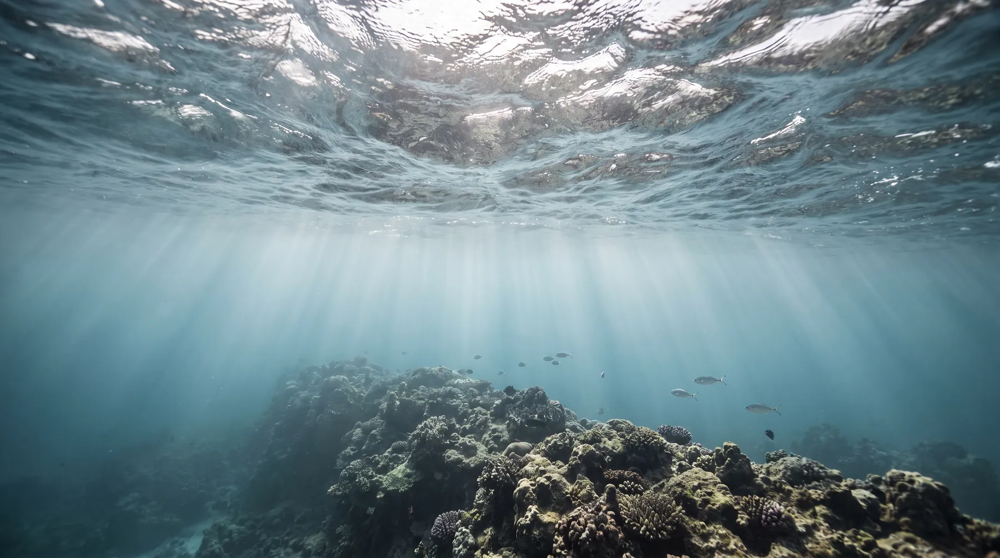
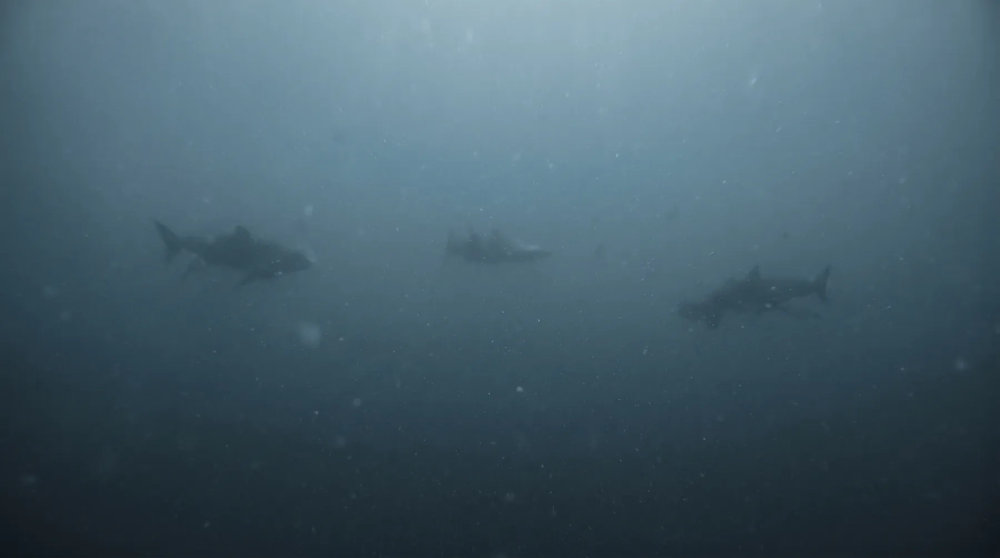
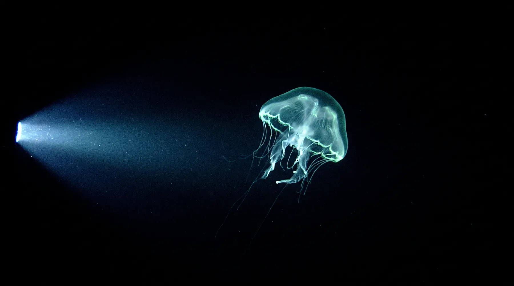
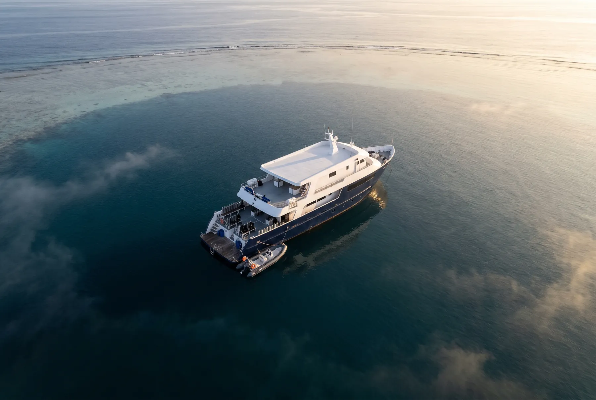
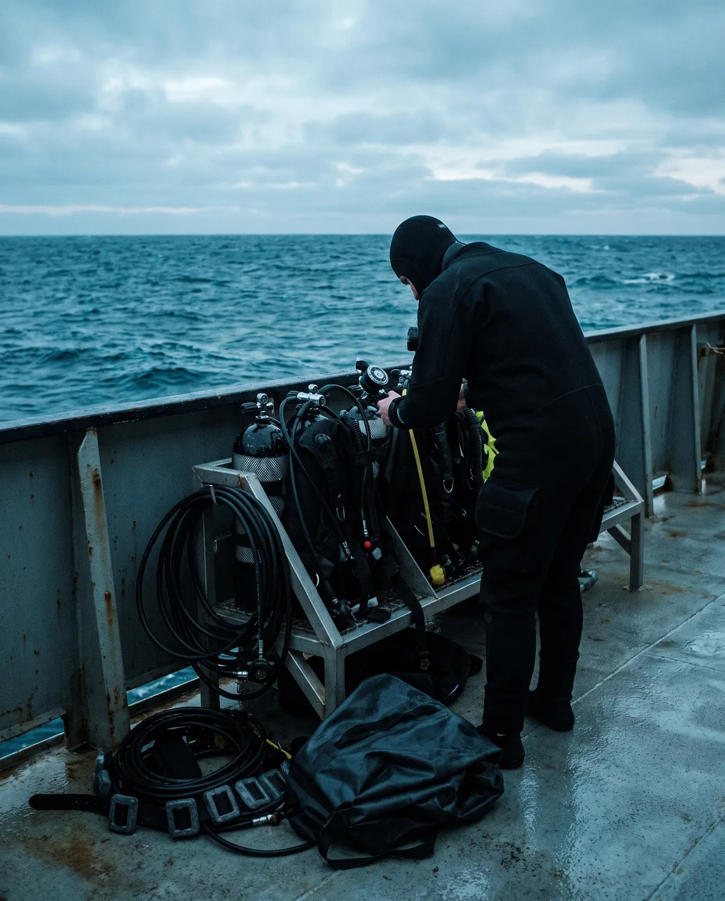

The sunlit layer, where every other operator stops.
Warm, bright, busy. It is where the reef lives and where checkout dives happen. We spend one morning here, then leave it behind.
SONDA runs twelve day expeditions to seamounts and outer atolls in the eastern Banda Sea. No resorts, no day boats, no other divers. The nearest harbour is nineteen hours astern.
Nothing here came off a tourist map. The line below is the actual track we run, plotted from our own echo soundings. Hover a station to read its wall. Open one to read the dive.



Warm, bright, busy. It is where the reef lives and where checkout dives happen. We spend one morning here, then leave it behind.
Below two hundred metres red has already gone. Shapes arrive before they resolve. This is where our deeper walls drop away and where the big animals pass through on their way up.
We do not dive it. We sound it, we film it from the ROV, and we sit with the fact that the floor under the vessel is a thousand metres further down than anything we will touch.

Everything on this list exists because something went wrong on an earlier trip. The chamber is the only one within four hundred nautical miles.
Berths are held for returning divers until ninety days out. Minimum 100 logged dives, and at least 20 of them below thirty metres.
The full traverse.

We turn down roughly a third of requests. Nobody enjoys being the one person on the boat who cannot do the dive.